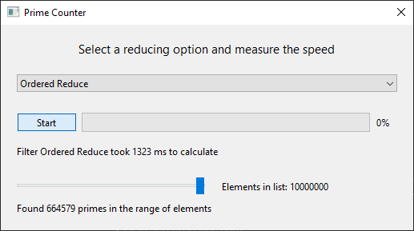

Prime Counter
Demonstrates how to monitor the progress of concurrent operations.
The following example demonstrates how to create an interactive and non-blocking QtWidgets application using the QFutureWatcher class and the filteredReduced functions from Qt Concurrent. With this example, the user can create a QList of integers that can be resized. The list will be automatically filled with natural numbers starting from 1 up to n. The program will then check for prime numbers within the list and display the total count of prime numbers found.

Running the Example
To run the example from Qt Creator, open the Welcome mode and select the example from Examples. For more information, visit Building and Running an Example.
Setting up the connections
The Qt Concurrent library provides the filteredReduced functions, which can operate in two modes: OrderedReduce and UnorderedReduce. In OrderedReduce mode, the reducing function is called in the order of the original sequence, whereas in UnorderedReduce mode, the elements are accessed randomly.
After configuring the UI with the desired elements, it is necessary to connect them to the signals of the concurrent operations using the Qt Signals & Slots mechanism. In this example, we use the QFutureWatcher class to monitor the progress of the concurrent operations and provide the signals required to implement the interactive GUI.
...
connect(ui->pushButton, &QPushButton::clicked,
this, [this] { start(); });
connect(&watcher, &QFutureWatcher<Element>::finished,
this, [this] { finish(); });
connect(&watcher, &QFutureWatcher<Element>::progressRangeChanged,
ui->progressBar, &QProgressBar::setRange);
connect(&watcher, &QFutureWatcher<Element>::progressValueChanged,
ui->progressBar, &QProgressBar::setValue);
...
The QFutureWatcher class plays a vital role in this example as it provides the signals required to update the UI in response to changes in the concurrent operations.
Starting the concurrent operation
After connecting all the Signals & Slots, and when the user presses the QPushButton, the start() function is called.
In the start() function, we call the filteredReduced function from Qt Concurrent and set the future on the QFutureWatcher member. To ensure that this operation runs truly concurrently, we specify a separate QThreadPool as the first parameter. This approach also avoids any possible blocking in the global thread pool. We pass the QList of integers as the container, a static filter and reduce function, and finally the ReduceOption flag.
...
void PrimeCounter::start()
{
if (ui->pushButton->isChecked()) {
ui->comboBox->setEnabled(false);
ui->pushButton->setText(tr("Cancel"));
ui->labelResult->setText(tr("Calculating ..."));
ui->labelFilter->setText(tr("Selected Reduce Option: %1").arg(ui->comboBox->currentText()));
fillElementList(ui->horizontalSlider->value() * stepSize);
timer.start();
watcher.setFuture(
QtConcurrent::filteredReduced(
&pool,
elementList,
filterFunction,
reduceFunction,
currentReduceOpt | QtConcurrent::SequentialReduce));
...
Let's examine the filter and reduce functions. These functions are declared static in this example since they do not depend on any member variable. However, they could easily be specified as lambdas or member functions.
The filter function marks elements for subsequent reduction with the reduce function. This implementation is a simple prime filter. As this function takes a const reference as an argument, it allows thread-safe operation on the container it operates on.
...
bool PrimeCounter::filterFunction(const Element &element)
{
// Filter for primes
if (element <= 1)
return false;
for (Element i = 2; i*i <= element; ++i) {
if (element % i == 0)
return false;
}
return true;
}
...
The reduce function takes a modifiable reference of the same type as the container it operates on as its first parameter. The second parameter is the previously filtered element from the filter function. In this example, we count the number of primes.
...
void PrimeCounter::reduceFunction(Element &out, const Element &value)
{
// Count the amount of primes.
Q_UNUSED(value);
++out;
}
...